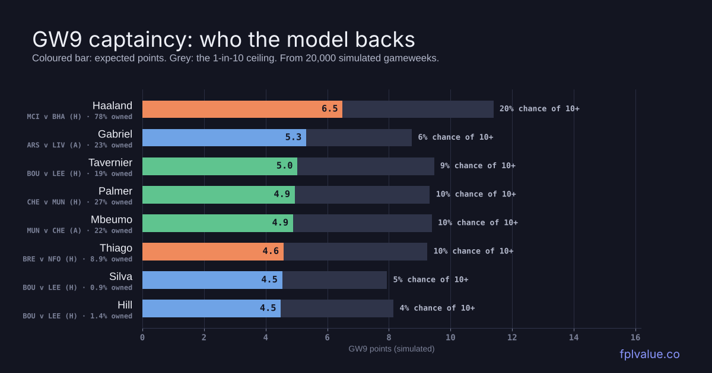

Haaland, Thiago and a Bournemouth bargain
GW9's deadline is Saturday at 11:00, not the usual Friday evening. Two things shape the week. João Pedro is out and in two-thirds of squads, and Bournemouth have the easiest fixture run in the league just as their results catch up with their numbers. This week's feature posts cover both in depth: who replaces João Pedro and which teams are really in form. Here's the full brief.

The brief three calls for GW9
6.5 expected points at home to Brighton, a full point clear of anyone else, with City's 1.92 model xG the highest of the week. A 20% chance of 20+ points with the armband.
The straight swap for João Pedro at the same £7.8m. Brentford's penalty taker, every minute played, and one goal from 3.78 xG. The best GW9 projection of any forward after Haaland, at home to Forest.
£5.0m, owned by 0.9%, and 21.6 projected points over five weeks, as many as Van Dijk at £1.4m less. Bournemouth play Leeds, Ipswich and Forest in the next three.
Last week's calls GW8 scorecard
| Call | Player | Expected | Scored | Verdict |
|---|---|---|---|---|
| Captain | B.Fernandes MUN | 12.8 | 0×2 = 0 | Miss |
| Buy | Tavernier BOU | 4.3 | 10 | Hit |
| Value | Thomas COV | 3.8 | 1 | Miss |
One hit from three. Fernandes didn't play at all, so the captaincy call scored 0. That's the second time in three weeks the model's captain has blanked, and it's the reason the model now gives him only a 71% chance of starting. Tavernier scored at Old Trafford in Bournemouth's 3-0 win for 10 points. Thomas of Coventry managed 1 point in 59 minutes and now carries a 75% flag.
Captaincy 20,000 simulated GW9s
| Player | expected 1-in-10 ceiling | xPts | Pens | Ceiling | 10+ pts | Owned |
|---|---|---|---|---|---|---|
| FWD HaalandMCI · BHA (H) | 6.5 | 0.3 | 11 | 20% | 78% | |
| DEF GabrielARS · LIV (A) | 5.3 | – | 9 | 6% | 23% | |
| MID TavernierBOU · LEE (H) | 5.0 | 0.2 | 9 | 9% | 19% | |
| MID PalmerCHE · MUN (H) | 4.9 | 0.6 | 9 | 10% | 27% | |
| MID MbeumoMUN · CHE (A) | 4.9 | 0.1 | 9 | 10% | 22% | |
| FWD ThiagoBRE · NFO (H) | 4.6 | 0.6 | 9 | 10% | 8.9% | |
| DEF SilvaBOU · LEE (H) | 4.5 | – | 8 | 5% | 0.9% | |
| DEF HillBOU · LEE (H) | 4.5 | – | 8 | 4% | 1.4% |
This is the easiest captaincy call of the season so far. Haaland projects at 6.5, more than a point clear of Gabriel (5.3), and he's at home to a Brighton side the model concedes 1.92 expected goals to. His 1-in-10 ceiling is 11 points before doubling, and he blanks (2 points or fewer) in only 3% of simulations. With 78% ownership, not captaining him is a big risk for little reason.
If you don't own him, Tavernier (5.0 at home to Leeds) and Palmer (4.9 at home to United, on penalties) are the alternatives. Gabriel is the interesting one. Arsenal have the best clean-sheet odds of the week (36%) even away at Anfield and he has a 9-point ceiling.
The fixtures model xG · clean-sheet odds
City at home to Brighton and Bournemouth at home to Leeds are the two attacking fixtures, at 1.92 and 1.83 model xG. Brentford v Forest (1.74) is third, which is part of the Thiago case. Arsenal's 36% clean-sheet chance at Liverpool is the only one above 31%, and the model rates them the stronger side at Anfield (1.34 xG to 1.01). Coventry v Sunderland is the lowest-scoring game on the model, and Coventry, Sunderland and Spurs all have clean-sheet odds of 30% or better, which makes them good spots for cheap defenders.
The model's XI 4-4-2 · £100.0m
Best 15 under £100.0m for the next five gameweeks, picked by the optimiser on the projections page. Expected GW9 total with the armband: 58.5.
The optimiser goes 4-4-2 and leans on Bournemouth. Silva, Hill and Tavernier are all in for the Leeds game and the run after it. It has no João Pedro, and its forwards are Haaland and Calvert-Lewin, with Coventry's Thomas-Asante on the bench. Van Hecke (£4.9m, Spurs at home to Palace) is the other budget defender. Expected GW9 total with Haaland captained: 58.5.
Transfer targets GW9–13 projection
| Player | GW9–13 | Per £m | GW9 | Next five (model difficulty) |
|---|---|---|---|---|
| GKP | ||||
| RayaARS · £6.2m · 46% | 20.2 | 3.25 | 3.9 | LIVAHULHNEWAMCIHBREA |
| Suzuki differentialAVL · £5.0m · 2.7% | 17.2 | 3.45 | 3.5 | FULHMUNASUNHIPSAEVEH |
| Trafford differentialLEE · £5.0m · 6.1% | 16.9 | 3.39 | 3.1 | BOUATOTHCHEACOVHMCIA |
| Kinsky valueTOT · £4.4m · 15% | 15.9 | 3.62 | 3.2 | CRYHLEEAIPSHSUNAFULH |
| Leno valueFUL · £4.5m · 4.5% | 15.6 | 3.48 | 3.1 | AVLANEWHMCIABOUHTOTA |
| DEF | ||||
| GabrielARS · £7.9m · 23% | 28.6 | 3.62 | 5.3 | LIVAHULHNEWAMCIHBREA |
| VirgilLIV · £6.4m · 15% | 21.6 | 3.38 | 4.0 | ARSHCRYAMUNHEVEASUNH |
| Silva differentialBOU · £5.0m · 0.9% | 21.6 | 4.32 | 4.5 | LEEHIPSANFOHFULABHAH |
| Van Hecke valueTOT · £4.9m · 7.7% | 21.3 | 4.34 | 4.3 | CRYHLEEAIPSHSUNAFULH |
| Konsa valueARS · £4.7m · 20% | 20.2 | 4.30 | 3.8 | LIVAHULHNEWAMCIHBREA |
| MID | ||||
| MbeumoMUN · £7.9m · 22% | 26.1 | 3.30 | 4.9 | CHEAAVLHLIVABREHNEWA |
| TavernierBOU · £6.4m · 19% | 24.8 | 3.87 | 5.0 | LEEHIPSANFOHFULABHAH |
| PalmerCHE · £9.8m · 27% | 24.6 | 2.51 | 5.0 | MUNHSUNALEEHNFOACRYH |
| Rudoni valueCOV · £4.9m · 0.7% | 19.6 | 4.01 | 4.0 | SUNHEVEACRYHLEEAIPSH |
| Groß valueBHA · £6.2m · 46% | 22.8 | 3.67 | 4.1 | MCIABREHHULANEWHBOUA |
| FWD | ||||
| HaalandMCI · £15.8m · 78% | 30.6 | 1.94 | 6.5 | BHAHNFOAFULHARSALEEH |
| Thiago differentialBRE · £7.8m · 8.9% | 21.0 | 2.70 | 4.6 | NFOHBHAAEVEHMUNAARSH |
| Calvert-LewinLEE · £6.1m · 21% | 20.8 | 3.41 | 4.0 | BOUATOTHCHEACOVHMCIA |
| Barry valueEVE · £5.6m · 7.3% | 19.5 | 3.49 | 3.9 | NEWACOVHBREALIVHAVLA |
| Gonzalo valueFUL · £6.0m · 5.6% | 18.9 | 3.15 | 3.7 | AVLANEWHMCIABOUHTOTA |
Bournemouth appear in three positions, and Silva is within a whisker of Van Hecke for the best points per pound among the top defenders. In midfield, Mbeumo (26.1) is the model's top pick for the next five despite United's results. The team form piece explains why we think their bad run is noise. Up front, Thiago, Calvert-Lewin and Barry are the three best João Pedro replacements, at £7.8m, £6.1m and £5.6m.
Crowd vs model this week's transfers
| Most bought | In | Model rank | Verdict |
|---|---|---|---|
| TavernierBOU · £6.4m | 489k | #2 MID | Agree |
| N.JacksonAVL · £6.8m | 468k | #8 FWD | Agree |
| IsakLIV · £9.1m | 183k | #5 FWD | Agree |
| KonsaARS · £4.7m | 159k | #8 DEF | Agree |
| EvanilsonBOU · £6.2m | 153k | #7 FWD | Agree |
| Most sold | Out | Model rank | Verdict |
|---|---|---|---|
| João PedroCHE · £7.8m | 309k | #30 FWD | Agree: injured |
| CalafioriARS · £6.0m | 228k | #33 DEF | Agree |
| SakaARS · £9.5m | 193k | #103 MID | Agree: injured |
| B.FernandesMUN · £11.7m | 179k | #6 MID | Model disagrees |
| CherkiMCI · £8.0m | 165k | #23 MID | Agree |
Model rank = position among players at the same position on the GW9–13 projection. Transfers are this gameweek's totals so far, from the FPL API.
The crowd and the model agree on almost everything this week. Tavernier, Jackson, Isak, Konsa and Evanilson are all being bought and all rank in the model's top eight at their position. The exception is Fernandes. 179,000 managers are selling him after his GW8 absence, but he's still the model's sixth-best midfielder over five weeks, even at a 71% start chance. If he's in United's XI on Saturday, holding is fine. Nobody should be buying Calafiori (75% flag) or Saka (out).
Fitness flags 5%+ owned
- João Pedro CHE · 66% ownedOutThigh injury - Unknown return date
- Calafiori ARS · 52% owned75%Hip injury - 75% chance of playing
- Szoboszlai LIV · 15% ownedOutHamstring injury - Unknown return date
- Rice ARS · 13% owned75%Unspecified injury - 75% chance of playing
- Thomas COV · 9.4% owned75%Unspecified injury - 75% chance of playing
- Saka ARS · 8.5% ownedOutThigh injury - Unknown return date
- Semenyo MCI · 7.6% ownedOutKnee injury - Unknown return date
- N.Williams NFO · 6.0% owned75%Arm injury - 75% chance of playing
- Wirtz LIV · 5.0% owned75%Ankle injury - 75% chance of playing
João Pedro is the flag that matters, and our replacement piece covers the hold-or-sell sums. Calafiori is at 75% with a hip problem and in 52% of squads. Arsenal's press conference is the one to watch, and Konsa (£4.7m, 20.2 over five weeks) is the like-for-like Arsenal defender if he's ruled out. Saka, Szoboszlai and Semenyo are all out with no return date.
Luck check points minus Understat xPts, 2026/27
This table is the reverse of the one in the team form piece. Forest (−7.6) and Bournemouth (−6.3) are still the two unluckiest sides by Understat's expected points. Bournemouth's GW8 win at Old Trafford isn't in these numbers yet. At the top, City (+6.5) and Arsenal (+4.5) are the two best teams and have also had the run of the ball. Below them, Chelsea (+3.6) have done most to outrun their chances, and they've now lost João Pedro.
Track record live since GW6
| GW | Model error | FPL error | Rank corr. | Model captain | FPL's captain |
|---|---|---|---|---|---|
| GW6 | 1.94 | 2.21 | 0.32 | B.Fernandes 7.2 → 1 | Groß → 6 |
| GW7 | 1.97 | 2.35 | 0.37 | Haaland 7.7 → 13 | De Cuyper → 6 |
| GW8 | 2.12 | 2.40 | 0.21 | B.Fernandes 6.4 → 0 | De Cuyper → 1 |
Three weeks in, the model's average error per player is lower than FPL's own expected-points figure every week, by about 0.3 points. Its captains have been the weak spot: Fernandes (1), Haaland (13) and Fernandes again (0). The rank correlation dipped to 0.21 in GW8, the worst of the three weeks. The full table is on the track record page.
Method: projections are the site's own model (non-penalty xG plus a separate penalty term, xA, clean-sheet and minutes rates, shrunk toward last season and price; details on the metrics page), generated Wed 28 Oct 15:16. Captaincy uses 20,000 simulations of GW9; the ceiling is the 90th percentile. Fixture difficulty is the model's 1–5 blend of xG ratings and FPL's own. Luck check uses Understat expected points. Check team news before the deadline: the model only knows what FPL's availability flags said at the time.